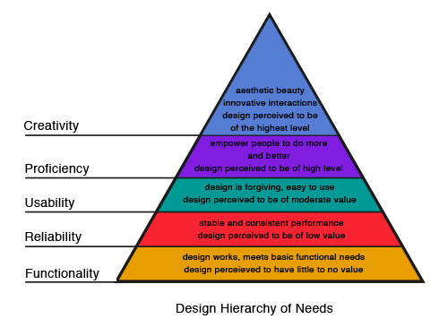

Zo, daar gaan we dan. De eerste dag van het nieuwe semester. We zijn gelijk begonnen met niet alleen een hoorcollege, maar ook een gast college van een oud CMD student van de HHS. Een lekker begin!
Onze waarneming wordt vertekend door ervaring (verleden), context (heden) en doelen (toekomst).
1. Perceptional patterns/mental frames
Wat je ziet wordt beinvloed door wat je verwacht te zien op basis van ervaring en is op lange termijn.
2. Habituation
Repeated exposure dulls our sensitivity. Vaak is het zo dat we aan dingen gewend raken tot het normaal is.
3. Perceptual priming
Het verhaal wat je vooral hoort heeft invloed op wat je daarna (kan) zien. Dit is van korte duur.
4. Attentional blink
Je ben heel even weg, al is het een halve seconde, waardoor je misschien wat mist.
Je waarneming wordt beinvloed door je doelen. We filteren veel informatie maar nemen niet alles op.
Voor design betekent het dat je zo helder mogelijk moet zijn:
1. Vermijd ambiguiteit
2. Wees consistent
3. Wees bewust van de doelen van de gebruikers.
"Our vision is optimized to see structure/details. We have a need for visual structure."
Maaike Bruggeling is 2 jaar geleden afgestudeerd van de HHS en is werkzaam als UX designer bij CGI Rotterdam, en heeft ons bekend gemaakt met inclusive design.
Accessibility is het principe om websites toegankelijk te maken voor alles gebruikers.
25% van de nederlandse bevolking heeft een beperking, of het nou permanent (één arm) of situationeel (gebroken arm) is. Ze gaf ons voorbeelden van hoe mensen met een bepaalde beperking een website ervaart. Kleurenblinde zien bijvoorbeeld sommige logos minder goed, of foutmeldingen bij het inloggen. Mensen die een screenreader gebruiken horen vaak te veel of te weinig. Mensen die doof of slecht horend zijn worden wel een s verplicht om (terug) te bellen.
Ons doel als designer moet zijn dat ons werk toegankelijk is voor iedereen, dus als we ons nu al inlezen op inclusive design, gaat het ons later best wat werk schelen.
Er is zo veel om rekening mee te houden, dat het bijna onmogelijk lijkt om voor iedereen te designen. Er waren veel dingen waarvan ik wel wist dat het bestond, maar nog niet bij stil heb gestaan. Voornamelijk hoe mensen met een beperking een website ervaren. Ik heb zelf (voor zo ver ik weet) geen permanente beperkingen, dus als ik bijvoorbeeld een home pagina aan het maken ben, denk ik aan wat ik zie. Maar iemand die kleurenblind is, die ziet natuurlijk heel wat anders. Hier ga ik veel meer bij stil staan in toekomstige projecten.
We zijn in het hoorcollege een beetje op de Gestalt principes in gegaan, maar ik vond het zo interessant dat ik wat meer research er op heb gedaan. Het is behoorlijk complex, met veel ‘moeilijke’ termen, maar naar mijn idee is het heel nuttig om te weten.
“They argued that the psychological "whole" has priority and that the "parts" are defined by the structure of the whole, rather than vice versa. One could say that the approach was based on a macroscopic view of psychology rather than a microscopic approach.[10] Gestalt theories of perception are based on human nature being inclined to understand objects as an entire structure rather than the sum of its parts.”
“The law of Prägnanz implies that, as individuals perceive the world, they eliminate complexity and unfamiliarity so they can observe reality in its most simplistic form. Eliminating extraneous stimuli helps the mind create meaning.”
In het kort, onze hersenen zullen altijd proberen om orde te creeeren van chaos.
Wat ik ook heb geleerd is dat je een mooie website kan hebben, maar het is niks waard als het niet werkt. Dit zie je terug in de hierarchy of needs.

Zoals je ziet is functionality en reliability essentieel voor een goed design.
- Hoofdstuk 1 en 2 van Designing with the Mind in Mind, Jeff Johnson
- de Gestalt pagina op wikipedia
- Maslow's Hierarchy of Needs
- Design hierarchy of needs, Smashing Magazine
- 7 Gestalt principles of visual perception
- Gestalt Principles Applied to UX Design